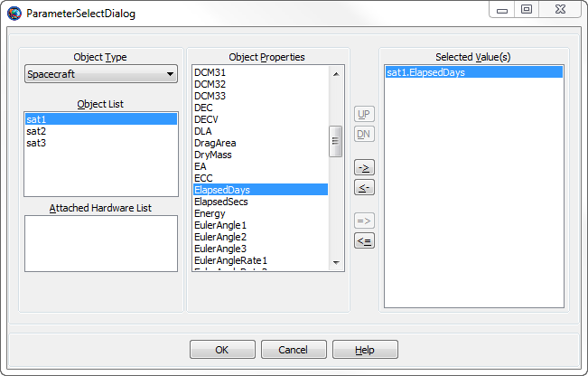
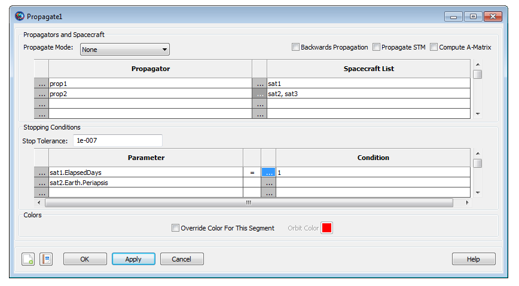

Propagate
Propagate — Propagates spacecraft to a requested stopping condition
Script Syntax
The Propagate command is a complex command that
supports multiple Propagators, multiple
Spacecraft, and multiple stopping conditions. In the
syntax definition below, SatList is a comma separated
list of spacecraft and StopList is a comma separated
list of stopping conditions. The general syntax of the
Propagate command is:
Propagate[Mode] [BackProp]Propagator1Name(SatList1,{StopList1})...Propagator2Name(SatList2,{StopList2} orPropagate[Mode] [BackProp]Propagator1Name(SatList1)...Propagator2Name(SatList2){StopList}
Most applications propagate a single Spacecraft, forward, to a single stopping condition. In that case, the syntax simplifies to:
PropagatePropagatorName(SatName,{StopCond}); orPropagatePropagatorName(SatName){StopCond};
In GMAT, syntax for setting orbit color on a Propagate command for a single Spacecraft propagating forward to a single stopping condition can be done by either identifying orbit color through ColorName or via RGB triplet value:
PropagatePropagatorName(SatName),{StopCond, OrbitColor = ColorName}; orPropagatePropagatorName(SatName),{StopCond, OrbitColor = [RGB triplet value]};
Description
The Propagate command controls the time evolution of spacecraft. GMAT allows you to propagate single Spacecraft, multiple non-cooperative Spacecraft, and Formations in a single Propagate command. The Propagate command is complex and controls the following aspects of the temporal modelling of spacecraft:
The Spacecraft to be propagated
The model(s) used for the propagation (numerical integration, ephemeris interpolation)
The condition(s) to be satisfied at the termination of propagation
The direction of propagation (forwards or backwards in time)
The time synchronization of multiple Spacecraft
Propagation of STM and computation of state Jacobian (A-matrix)
Setting unique colors on different Spacecraft trajectory segments through Propagate commands
See Also: Propagator, Spacecraft, Formation, Color
Options
| Option | Description | ||||||||||
|---|---|---|---|---|---|---|---|---|---|---|---|
| Mode | Optional flag to time-synchronize propagation of Spacecraft performed by multiple Propagators in a single Propagate command. See the section called “Remarks” for more details.
| ||||||||||
| BackProp | Optional flag to propagate all Spacecraft in a Propagate command backwards in time.
| ||||||||||
| StopList | A comma separated list of stopping conditions. Stopping conditions must be parameters of propagated in . See the section called “Remarks” for more details.
| ||||||||||
| SatList | A comma separated list of Spacecraft. For SPK type Propagators, the Spacecraft must be configured with valid SPK kernels.
| ||||||||||
| PropagatorName | A propagator name.
| ||||||||||
| StopTolerance | Tolerance on the stopping condition root location. See the section called “Remarks” for more details.
| ||||||||||
| STM | Optional flag to propagate the orbit STM. STM propagation only occurs for numerical integrator type propagators.
| ||||||||||
| AMatrix | The Jacobian of the orbital acceleration. The partial of the first order acceleration vector with respect to the state vector.
| ||||||||||
| OrbitColor | Sets orbit color on a Propagate
command. Default color on Propagate segment
is seeded from color that is set on
Spacecraft.OrbitColor field. To set unique
colors on Propagate command in script mode:
Enter ColorName or RGB triplet value for the color of your choice.
In GUI mode, select unique color of your choice on the
Propagate command by clicking on Orbit Color
Selectbox. For Example: Setting yellow color on
Propagate segment in script mode can be done
in either of the following two ways:
|
GUI
Introduction
The Propagate command GUI provides an interface to assign Spacecraft to Propagators used for propagation and to define a set of conditions to terminate propagation. The GUI also allows you to define the direction of propagation, the synchronization mode for multiple spacecraft, and whether or not to propagate the STM and compute the A-Matrix.
To follow the examples below, you can load the following script snippet or create a new mission with three spacecraft (named sat1, sat2, and sat3) and two propagators (named prop1 and prop2).
Create Spacecraft sat1 sat2 sat3
Create Propagator prop1 prop2
BeginMissionSequencerDefining Spacecraft and Propagators
To demonstrate how to define a set of propagators and Spacecraft for propagation, you will set up a Propagate command to propagate a Spacecraft named sat1 using a Propagator named prop1 and Spacecraft named sat2 and sat3 using a Propagator named prop2. You will configure the command to propagate for 1 day or until sat2 reaches periapsis, whichever happens first. You will need to configure GMAT as described in the the section called “Introduction” section and add a new Propagate command to your mission sequence. GMAT auto-populates the Propagate command GUI with the first Propagator in the GUI list and the first Spacecraft when you add a new Propagate command so you should start from this point.
 |
To add a second Propagator to propagate sat2 and sat3 using prop2:
In the Propagator list, click the ellipsis button in the second row to open the Propagator Select Dialog.

In the Available Propagators list, click on prop2, and click OK.
In the Spacecraft List, click the ellipsis button in the second row to open the Space Object Select dialog.
Click the right-arrow twice to add sat2 and sat3 to the list of selected spacecraft and click Ok.
 |
Stopping conditions
Continuing with the example above, now you will configure GMAT to propagate for one elapsed day or until sat2 reaches periapsis.
In the Parameter list, click the ellipsis button in the first row to bring up the Parameter Select Dialog.
In the ObjectProperties list, double click ElapsedDays, and click OK.
 In the Condition list, double click the first row containing
12000, type1, and click OK.In the Parameter list, click the ellipsis button in the second row to bring up the Parameter Select Dialog.
In the Object list, click Sat2.
In the ObjectProperties list, double click Periapsis and click OK.
The Propagate1 dialog should now look like the image below.
|  |
Remarks
Introduction
The Propagate command documentation below describes how to propagate single and multiple Spacecraft to desired conditions forward and backwards in time. To streamline the script examples, the objects numSat, spkSat, numProp, and spkProp are assumed to be configured as shown below. GMAT is distributed with the SPK kernels used in the examples.
Create Spacecraft spkSat;
spkSat.Epoch.UTCGregorian = '02 Jun 2004 12:00:00.000'
spkSat.NAIFId = -123456789;
spkSat.OrbitSpiceKernelName = {'..\data\vehicle\ephem\spk\GEOSat.bsp'};
Create Spacecraft numSat
numSat.Epoch.UTCGregorian = '02 Jun 2004 12:00:00.000'
Create Propagator spkProp;
spkProp.Type = SPK;
spkProp.StartEpoch = FromSpacecraft
Create Propagator numProp
numProp.Type = PrinceDormand78
BeginMissionSequenceHow to Propagate a Single Spacecraft
Note: See the the section called “Introduction” section for a script snippet
to configure GMAT to execute the examples in this section.
The Propagate command provides a simple interface to propagate a Spacecraft to a stopping condition or to take a single propagation step. To propagate a single Spacecraft you must specify the desired Propagator, the Spacecraft to propagate, and if desired, the stopping condition. The Propagate command supports numerical integrator and ephemeris type propagators. For single Spacecraft propagation, the syntax is the same regardless of propagator type. For example, to propagate a Spacecraft using a numerical integrator, you can use the following script snippet:
Propagate numProp(numSat){numSat.Periapsis}
% or
Propagate numProp(numSat,{numSat.Periapsis})To propagate a single Spacecraft using a Propagator configured to use an SPK kernel use the following:
Propagate spkProp(spkSat){spkSat.TA = 90}
% or
Propagate spkProp(spkSat,{spkSat.TA = 90})To take a single propagation step, simply omit the stopping conditions as shown below. The Propagator will take a step based on its step size control algorithm. See the Propagator documentation for more information on step size control.
Propagate numProp(numSat)
% or
Propagate spkProp(spkSat) How to Propagate Multiple Spacecraft
The Propagate command allows you to propagate multiple Spacecraft by including a list of Spacecraft in a single Propagator, by including a Formation in a Propagator, and/or by including multiple Propagators in a single command. For example purposes, here is a script snippet that propagates multiple Spacecraft.
Propagate Synchronized Prop1(Sat1,Sat2) Prop2(Sat3,Sat4)...
Prop3(aFormation){Sat1.Earth.Periapsis}In the script line above Sat1 and Sat2 are propagated using Prop1; Prop2 is used to propagate Sat3 and Sat4; all Spacecraft added to aFormation are propagated using Prop3. The Propagate command configured above propagates all Spacecraft until Sat1 reaches Earth periapsis.
All Spacecraft propagated by the same Propagator are time synchronized during propagation. By time synchronization, we mean that all Spacecraft are propagated across the same time step. The Synchronized keyword tells GMAT to keep Spacecraft propagated by different Propagators synchronized in time during propagation. Time synchronization among multiple Propagators is performed by taking a single step for all Spacecraft controlled by the first Propagator (Prop1 in the above example), and then stepping all other Propagators to that time. When the Synchronized keyword is omitted, Spacecraft propagated by different Propagators are not synchronized in time. In that case, each Propagator takes steps determined by its step size control algorithm without regard to the other Propagators in the Propagate command. Time synchronization is particularly useful if you need ephemeris files for multiple spacecraft with consistent time tags, or if you are visualizing multiple spacecraft in an OrbitView.
Warning
Caution: When using a Propagator configured to use SPK kernels, you can only have one Spacecraft per Propagator.
This is supported:
Propagate numProp(numSat) spkProp(spkSat1)
spkProp(spkSat2)
This is NOT supported!
Propagate numProp(numSat)
spkProp(spkSat1,spkSat2)
Behavior of Stopping Conditions
GMAT allows you to define a set of stopping conditions when propagating Spacecraft that define conditions that must be satisfied at the termination of the Propagate command. For example, it is often useful to propagate to an orbital location such as Apogee. When no stopping condition is provided, the Propagate command takes a single step. When given a set of stopping conditions, the Propagate command propagates the Spacecraft to the condition that occurs first in elapsed propagation time and terminates propagation. There are several ways to define stopping conditions via the script interface. One is to include a comma separated list of stopping conditions with each Propagator like this.
Propagate Prop1(Sat1,{Sat1.Periapsis}) Prop2(Sat2,{Sat2.Periapsis}) A second approach is to define a comma separated list of stopping conditions at the end of the Propagate command like this.
Propagate Prop1(Sat1) Prop2(Sat2) {Sat1.Periapsis,Sat2.Periapsis}Note that the above two methods result in the same stopping epoch. When you provide a set of stopping conditions, regardless of where in the command the stopping condition is defined, GMAT builds a list of all conditions and tracks them until the first condition occurs.
The Propagate command currently requires that the left hand side of a stopping condition is a valid Spacecraft parameter. For example, the first line in the following example is supported and the second line is not supported.
Propagate Prop1(Sat1) {Sat1.TA = 45} % Supported
Propagate Prop1(Sat1) {45 = Sat1.TA} % Not supported GMAT supports special built-in stopping conditions for apoapsis and periapsis like this:
Propagate Prop1(Sat1) {Sat1.Apoapsis}
Propagate Prop1(Sat1) {Sat1.Mars.Periapsis} You can define the tolerance on the stopping condition by including the StopTolerance keyword in the Propagate command as shown below. In this example, GMAT will propagate until the true anomaly of Sat1 is 90 degrees to within +/- 1e-5 degrees.
Propagate Prop1(Sat1) {Sat1.TA = 90, StopTolerance = 1e-5}Warning
Caution: GMAT currently propagates Spacecraft to a time quantization of a few microseconds. Depending upon the rate of the stopping condition function, it may not be possible to locate the stopping condition to the requested StopTolerance. In that case, GMAT throws a warning to alert you that the tolerance was not satisfied and provides information on the achieved stopping value and the requested tolerance.
Note: GMAT does not currently support tolerances on a per stopping condition basis. If you include StopTolerance multiple times in a single Propagate command, GMAT uses the last value provided.
The Propagate command uses an algorithm called the First Step Algorithm (FSA) when back-to-back propagations occur and both propagations have at least one stopping condition that is the same in both commands. For example:
Propagate prop1(Sat1) {Sat1.TA = 90}
Propagate prop1(Sat1) {Sat1.TA = 90, StopTolerance = 1e-4}The FSA determines the behavior of the first step when the last propagation performed on a Spacecraft was terminated using a stopping condition listed in the current command. If the error in the stopping condition at the initial epoch of the second Propagate command is less than SafetyFactor*StopTolerance, the propagate command will take one integration step before attempting to locate the stopping condition again. In the FSA, SafetyFactor = 10, and the StopTolerance is from the second Propagate command. Continuing with the example above, if abs(TA_Achieved - TA_Desired) < 1e-3 -- where TA_Achieved is the TA after the first Propagate command and TA_Desired is the requested value of TA in the second Propagate command -- then the Propagate command will take one step before attempting to locate the stopping condition. The first step algorithm works the same way for forward propagation, backwards propagation, and changing propagation directions.
Warning
Caution: It is possible to specify a StopTolerance that cannot be satisfied by the stopping condition root locators and in that case, a warning is thrown. However, subsequent Propagate commands using the same stopping conditions may not behave as desired. For the FSA algorithm to work as designed, you must provide StopTolerance values that are achievable.
How to Propagate Backwards
To propagate backwards using the script interface, include the keyword BackProp between the Propagate command and the first Propagator in the command as shown below. All Propagators in the command will propagate backwards.
Propagate Synchronized BackProp Prop1(Sat1,Sat2) Prop2(Sat3,Sat4)...
Prop3(aFormation){Sat1.Earth.Periapsis}
Propagate Backprop numProp(numSat){numSat.Periapsis}How to Propagate the STM and Compute the Jacobian (A-matrix)
GMAT propagates the STM for all Spacecraft
propagated using numerical integrators by including the
STM keyword in a Propagate
command as shown below. If the STM keyword is included anywhere in a
Propagate command, the STM is propagated for all
spacecraft using numerical propagators.
Propagate Backprop numProp(numSat,’STM’){numSat.Periapsis}GMAT does not currently support propagating the STM when propagating Formation resources or when using SPK type propagators.
Limitations of the Propagate Command
When using an SPK-type Propagator, only a single Spacecraft can be propagated by a given Propagator.
GMAT does not currently support propagating the STM when propagating Formation objects.
When computing the A-matrix during propagation, the A-matrix values are only accessible via the C-Interface.
Setting Colors on the Propagate Command
GMAT allows you to assign unique colors to Spacecraft trajectory segments by setting orbital colors on each Propagate command. If you do not set unique colors on each Propagate command, then by default, the color on each propagate segment is seeded from color that is set on Spacecraft.OrbitColor field. See the Options section for OrbitColor option that lets you set colors on the Propagate command. Also see Color documentation for discussion and examples on how to set unique colors on orbital trajectory segments through GMAT's Propagate command.
Examples
Propagate a single Spacecraft to Earth periapsis
Create Spacecraft numSat
numSat.Epoch.UTCGregorian = '02 Jun 2004 12:00:00.000'
Create Propagator numProp
numProp.Type = PrinceDormand78
BeginMissionSequence
Propagate numProp(numSat) {numSat.Earth.Periapsis}Propagate a single Spacecraft for one day.
Create Spacecraft numSat
numSat.Epoch.UTCGregorian = '02 Jun 2004 12:00:00.000'
Create Propagator numProp
numProp.Type = PrinceDormand78
BeginMissionSequence
Propagate numProp(numSat) {numSat.ElapsedDays = 1}Propagate a single Spacecraft backwards to true anomaly of 90 degrees.
Create Spacecraft numSat
numSat.Epoch.UTCGregorian = '02 Jun 2004 12:00:00.000'
Create Propagator numProp
numProp.Type = PrinceDormand78
BeginMissionSequence
Propagate BackProp numProp(numSat) {numSat.TA = 90}Propagate two Spacecraft, each using a different Propagator, but keep the Spacecraft synchronized in time. Propagate until either Spacecraft reaches a mean anomaly of 45 degrees.
Create Spacecraft aSat1 aSat2
aSat1.Epoch.UTCGregorian = '02 Jun 2004 12:00:00.000'
aSat2.Epoch.UTCGregorian = '02 Jun 2004 12:00:00.000'
aSat2.TA = 0;
Create Propagator aProp1
aProp1.Type = PrinceDormand78
Create Propagator aProp2
aProp2.Type = PrinceDormand78
BeginMissionSequence
Propagate Synchronized aProp1(aSat1) aProp2(aSat2) ...
{aSat1.MA = 45,aSat2.MA = 45}